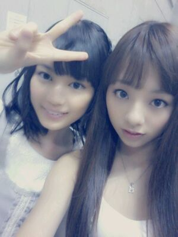
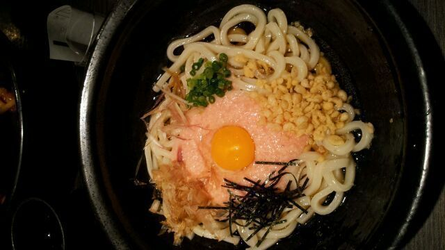

| 2012/10 31 Wed | 川村真洋 質問返し等々... ぼさほざ 前髪。 ろってぃー |
はろってぃ-♪♪ * .+ ゜*゜
えりかとのツーショが
ないとゆうコメントを
読みまして
そくざに撮ってきましたえ。
*・ω・*
どーーん。

いっくたどーん。
えりかの好きな
うっっ‥ !!
どーーーん ☆

そしてそして,
ボサボサってぃ〜 〃ω〃))
なぬ?
もしかして
一枚目もぢゃっかし
ぼさってぃい (・ε・`)?わら
どぅんどぅんどぅん ♪
質問返しするでしっ☆・ω・´
★名古屋握手会での
手紙&プレゼントは
もう受けとったぁ?
☆はいっ,もう受けとりました。
元気もらいました*^^*
本当嬉しかったよん♪
★ロッティーーー!!
どおした、何があった?
ピッカーンおでこは
どこいったん?
☆いったん封印 !!
じきに ときます(・ω・)
★ここ最近、立ち続けで
選抜メンバーの出演に
参加してるよね(^.^)?
☆うん‥ 本当嬉しいです。
感謝しなきゃだね。
それとねっ、
皆様に言っとかなきゃっ!
3日のさ
関西大学学園祭に
行きたかったんだけど
真洋,どーしてもずらせない
別の撮影が入っちゃってさ‥
真洋は関大に行けないんだ‥
(T-T)
★表参道って 美容院
多いですよね?
☆はい、色々とありますよね^_^
せっちゃんと同じ所に
通ってます♪
★コメントとか読んでるのかな?
☆毎日読んでますよっ♪
時間があればすぐ
blog開いちゃいます。
★豆乳カルボナーラうどんは
作ったの?
☆んー、 表参道のうどん屋
だよん `・ω てへっ
デリシャスデリシャス。☆
★絶叫系どんな感じだった?
☆めちゃくちゃ楽しかったので
も一度行きたいお気持ち。
★かなりんとの写メのかなりん
すっぴん?
☆そーなのよっ ))
本当かわらないよねっ!
可愛すぎるっ 〃ε〃
★真洋ちゃんって
コアラっぽいじゃん?
☆本間にぃ〜?
初めて言われたあ(*^^*)
まひろのお姉ちゃんが
コアラっぽい♪わら
まひろね、
子犬とリスに似てるって
言われるねっ*^^*
★『乃木ここ』ロケの時
寒かったんちゃうん?
☆昼間は普通にポカポカ
してたけど、
夕方から急に寒くなった>_<
膝掛けとかカイロとかで
頑張ったよん・ω・`))♪
★長野で うちわ
見てくれましたか?
☆ばっちり見えましたっ♪
ありがとうございます*^^)
★ダンスコンテストの合間に
手振り替えしてくれた
気がするのは気のせいかな?
☆いやっ、まひろ
絶対手振り替えしたよっ・ω・´☆
★おやきは中の具
色々あるけど
どれ選んだの?
☆色々あったけど
皆で取り合いになる前に
悩まず野沢菜を選びました(^-^)/
他のも食べてみたいなん♪
はいっ )))
今日はここまでっ★☆★
まあやがさっ,
blogに まひろのこと
書いてくれていたんだ(*^^*)
嬉しかった,ありがとー♪
メンバーが自分のこと
書いてくれてるのを
見たら 嬉しくなります〃_〃
この前 みさみさとかも
歌のこと 書いてくれていて
嬉しかった(⌒‐⌒)
あっ、 明日は
大事なお仕事があるっ!
朝はやいけど
ろってぃーパワー☆で
頑張りますっ＼(^-^)／
また更新しますっ /
読んでくれてありがとう♪
今日もおつかろってぃ-ね(・ω・)
おやすみなさい...。